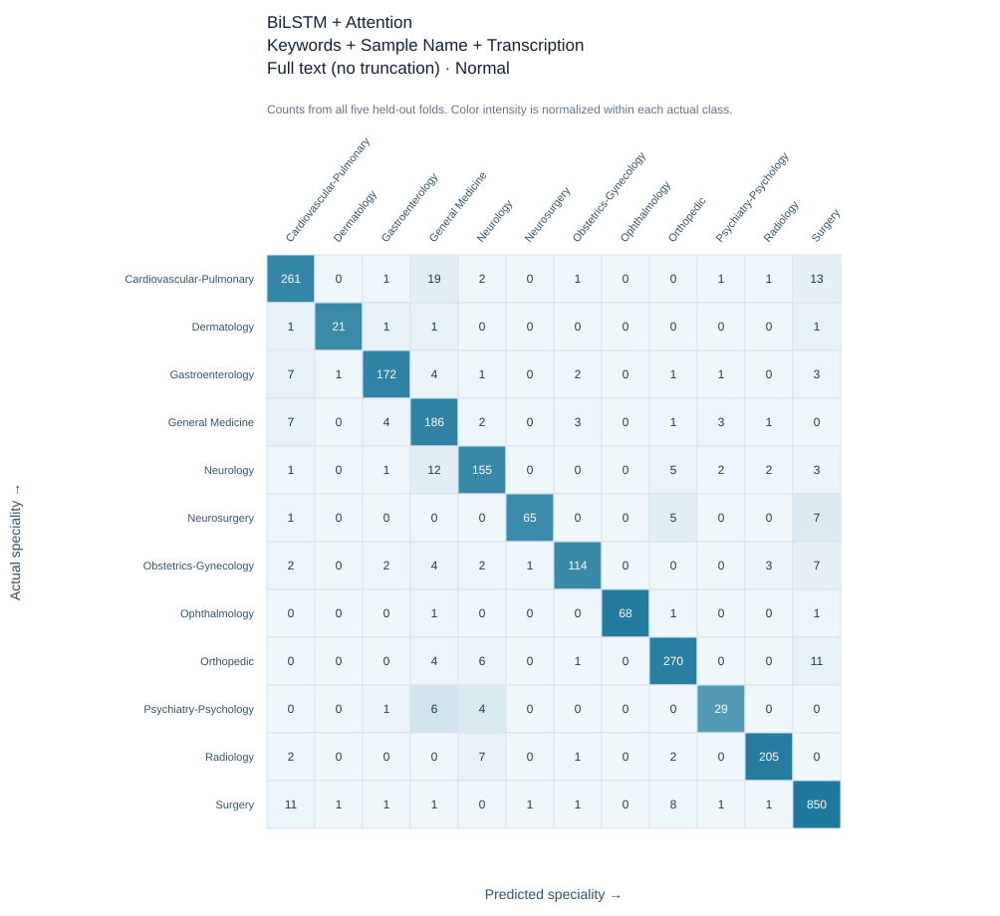
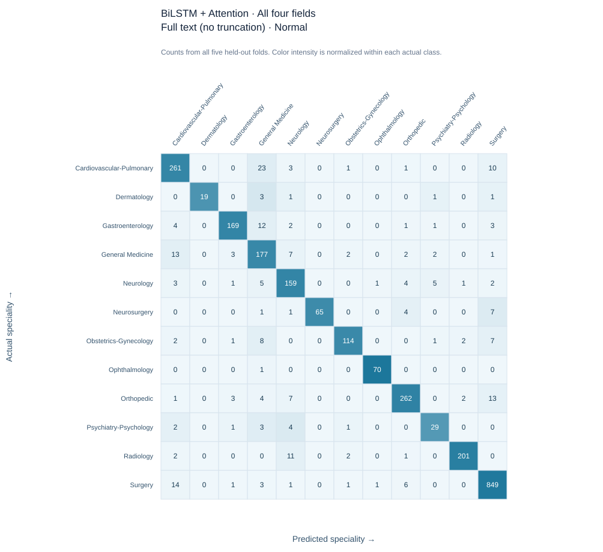
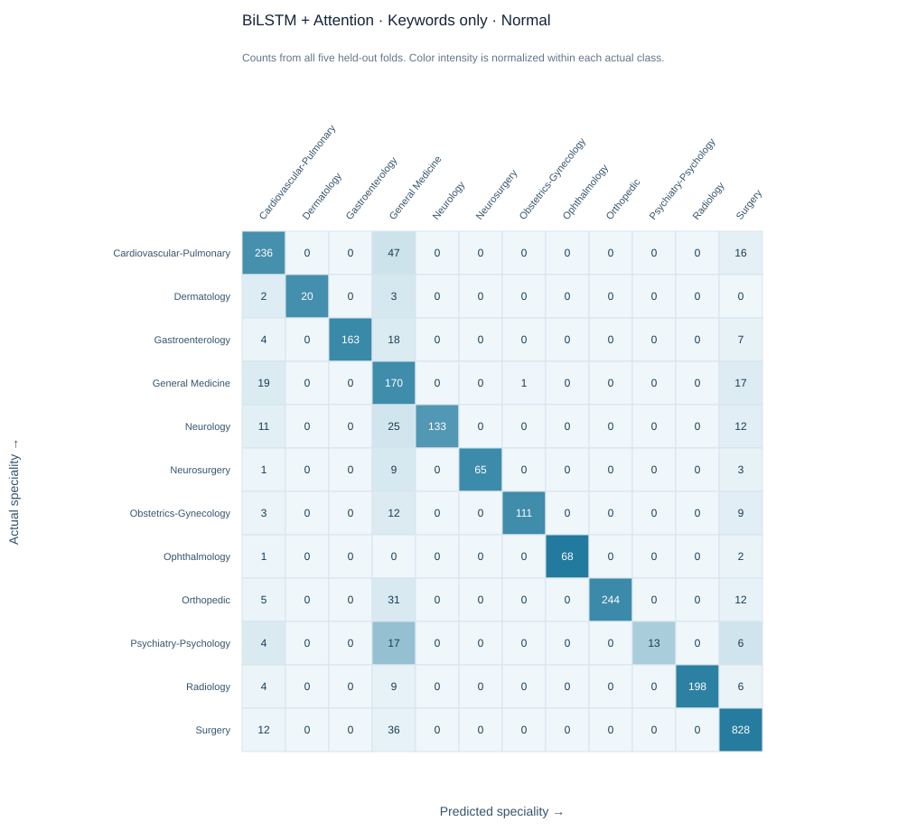
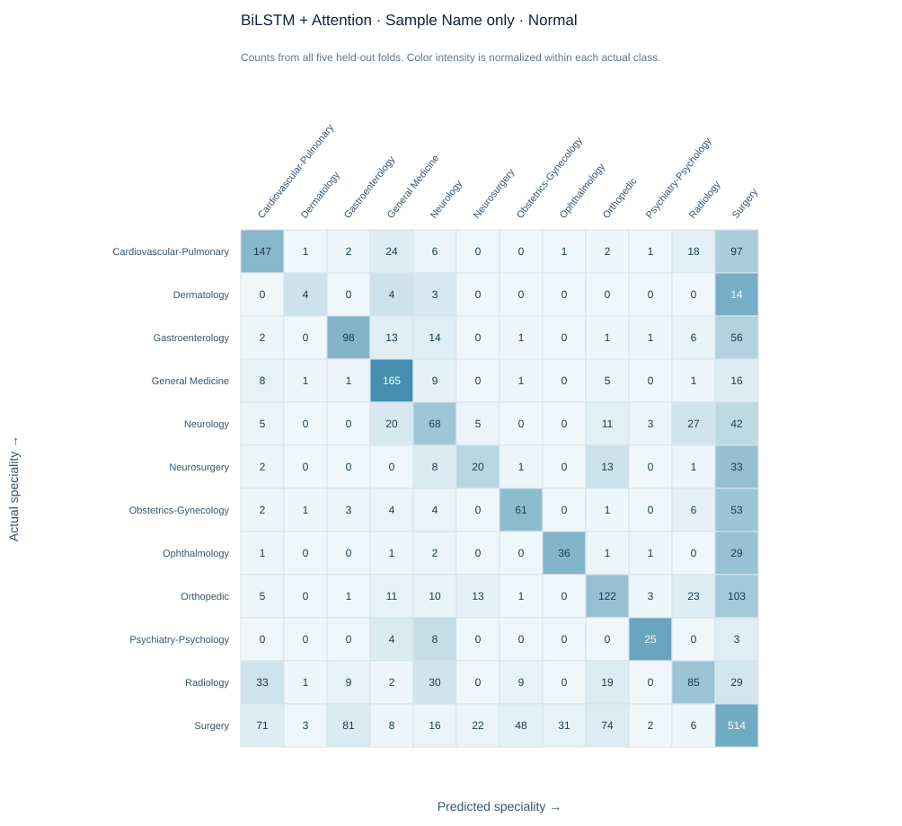
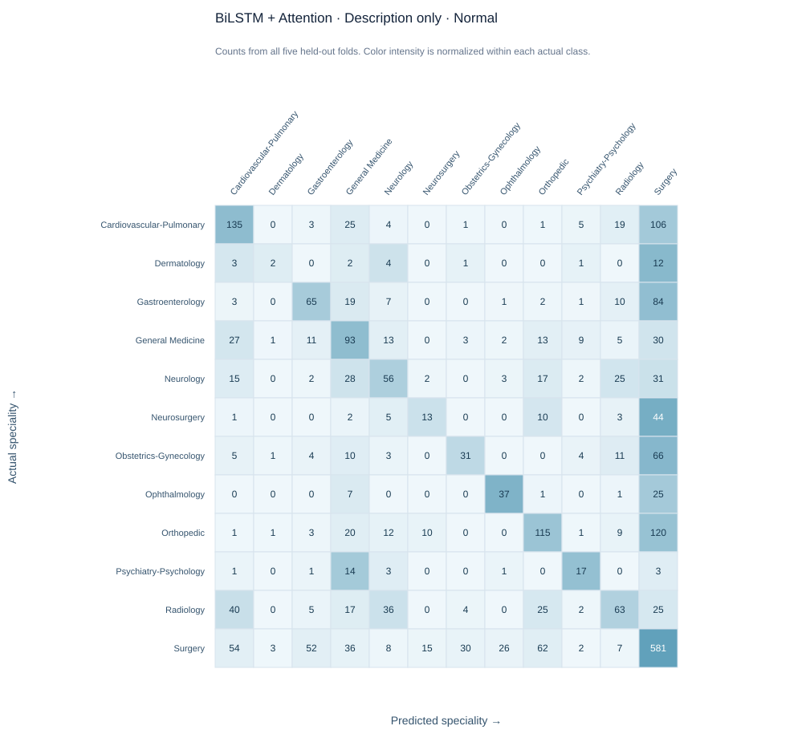
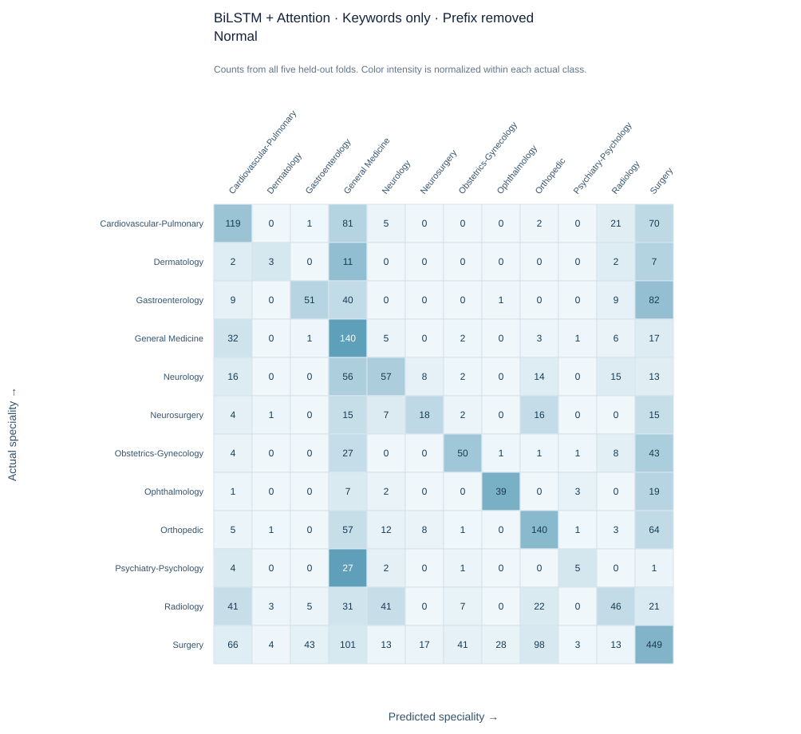

Clinical NLP · 5-Fold Cross-Validation
← Dashboard
BiLSTM + Attention
8 completed five-fold experiment(s). Fold mean ± sample standard deviation; pooled OOF is computed over all labelled examples.
Aggregate performance
| Experiment | Accuracy fold mean ± SD | Macro-F1 fold mean ± SD | Weighted-F1 fold mean ± SD | Min class F1 fold mean ± SD | Macro-F1 pooled OOF | Pass folds | Avg. best epoch |
|---|---|---|---|---|---|---|---|
| Keywords + Sample Name + Transcription · Full text (no truncation) · Normal | 91.7% ± 1.8% | 0.892 ± 0.023 | 0.917 ± 0.018 | 0.746 ± 0.082 | 0.893 | 5/5 | 12.800 ± 3.564 |
| Keywords + Sample Name · Normal | 90.9% ± 1.2% | 0.888 ± 0.020 | 0.909 ± 0.012 | 0.743 ± 0.078 | 0.889 | 5/5 | 6.600 ± 2.074 |
| All four fields · Full text (no truncation) · Normal | 90.9% ± 1.7% | 0.883 ± 0.020 | 0.910 ± 0.017 | 0.685 ± 0.105 | 0.885 | 5/5 | 13.400 ± 4.930 |
| Keywords + Sample Name · Weighted (sqrt_inv) | 90.2% ± 2.2% | 0.883 ± 0.029 | 0.904 ± 0.020 | 0.752 ± 0.071 | 0.882 | 5/5 | 10.800 ± 10.060 |
| Keywords only · Normal | 86.1% ± 2.3% | 0.842 ± 0.027 | 0.876 ± 0.029 | 0.450 ± 0.167 | 0.841 | 4/5 | 3.200 ± 2.280 |
| Sample Name only · Normal | 51.5% ± 2.8% | 0.471 ± 0.038 | 0.506 ± 0.032 | 0.153 ± 0.100 | 0.476 | 1/5 | 15.400 ± 2.881 |
| Description only · Normal | 46.2% ± 3.3% | 0.365 ± 0.043 | 0.446 ± 0.033 | 0.036 ± 0.081 | 0.374 | 0/5 | 14.800 ± 5.263 |
| Keywords only · Prefix removed · Normal | 42.7% ± 1.3% | 0.351 ± 0.025 | 0.421 ± 0.013 | 0.061 ± 0.090 | 0.360 | 0/5 | 16.000 ± 4.062 |
Per-class F1
Top line: fold mean ± SD. Second line: pooled out-of-fold F1.
| Medical specialty | Keywords + Sample Name + Transcription · Full text (no truncation) · Normal | Keywords + Sample Name · Normal | All four fields · Full text (no truncation) · Normal | Keywords + Sample Name · Weighted (sqrt_inv) | Keywords only · Normal | Sample Name only · Normal | Description only · Normal | Keywords only · Prefix removed · Normal |
|---|---|---|---|---|---|---|---|---|
| Cardiovascular-Pulmonary | 0.882 ± 0.029 pooled: 0.882 | 0.862 ± 0.023 pooled: 0.861 | 0.869 ± 0.018 pooled: 0.869 | 0.857 ± 0.020 pooled: 0.857 | 0.807 ± 0.096 pooled: 0.785 | 0.509 ± 0.037 pooled: 0.511 | 0.457 ± 0.048 pooled: 0.462 | 0.393 ± 0.039 pooled: 0.395 |
| Dermatology | 0.872 ± 0.091 pooled: 0.875 | 0.878 ± 0.125 pooled: 0.889 | 0.850 ± 0.137 pooled: 0.864 | 0.906 ± 0.103 pooled: 0.913 | 0.878 ± 0.125 pooled: 0.889 | 0.211 ± 0.125 pooled: 0.222 | 0.080 ± 0.179 pooled: 0.121 | 0.155 ± 0.156 pooled: 0.162 |
| Gastroenterology | 0.917 ± 0.014 pooled: 0.917 | 0.896 ± 0.044 pooled: 0.896 | 0.911 ± 0.036 pooled: 0.911 | 0.906 ± 0.032 pooled: 0.906 | 0.918 ± 0.021 pooled: 0.918 | 0.504 ± 0.071 pooled: 0.506 | 0.382 ± 0.038 pooled: 0.385 | 0.330 ± 0.140 pooled: 0.348 |
| General Medicine | 0.837 ± 0.037 pooled: 0.836 | 0.847 ± 0.039 pooled: 0.846 | 0.793 ± 0.060 pooled: 0.792 | 0.823 ± 0.088 pooled: 0.815 | 0.615 ± 0.103 pooled: 0.582 | 0.715 ± 0.053 pooled: 0.713 | 0.392 ± 0.064 pooled: 0.388 | 0.347 ± 0.013 pooled: 0.350 |
| Neurology | 0.861 ± 0.042 pooled: 0.861 | 0.819 ± 0.059 pooled: 0.819 | 0.845 ± 0.031 pooled: 0.844 | 0.803 ± 0.074 pooled: 0.800 | 0.846 ± 0.036 pooled: 0.847 | 0.378 ± 0.036 pooled: 0.379 | 0.324 ± 0.109 pooled: 0.337 | 0.339 ± 0.100 pooled: 0.351 |
| Neurosurgery | 0.895 ± 0.047 pooled: 0.897 | 0.896 ± 0.052 pooled: 0.898 | 0.907 ± 0.058 pooled: 0.909 | 0.866 ± 0.069 pooled: 0.865 | 0.907 ± 0.058 pooled: 0.909 | 0.266 ± 0.117 pooled: 0.290 | 0.203 ± 0.130 pooled: 0.220 | 0.257 ± 0.112 pooled: 0.279 |
| Obstetrics-Gynecology | 0.883 ± 0.045 pooled: 0.884 | 0.887 ± 0.075 pooled: 0.884 | 0.890 ± 0.063 pooled: 0.891 | 0.860 ± 0.058 pooled: 0.859 | 0.896 ± 0.066 pooled: 0.899 | 0.468 ± 0.074 pooled: 0.475 | 0.292 ± 0.091 pooled: 0.302 | 0.402 ± 0.120 pooled: 0.415 |
| Ophthalmology | 0.978 ± 0.034 pooled: 0.978 | 0.978 ± 0.034 pooled: 0.978 | 0.979 ± 0.019 pooled: 0.979 | 0.978 ± 0.034 pooled: 0.978 | 0.978 ± 0.034 pooled: 0.978 | 0.513 ± 0.098 pooled: 0.518 | 0.515 ± 0.115 pooled: 0.525 | 0.545 ± 0.135 pooled: 0.557 |
| Orthopedic | 0.923 ± 0.020 pooled: 0.923 | 0.916 ± 0.026 pooled: 0.916 | 0.914 ± 0.039 pooled: 0.914 | 0.913 ± 0.025 pooled: 0.913 | 0.910 ± 0.035 pooled: 0.910 | 0.450 ± 0.062 pooled: 0.451 | 0.426 ± 0.041 pooled: 0.428 | 0.476 ± 0.033 pooled: 0.476 |
| Psychiatry-Psychology | 0.746 ± 0.082 pooled: 0.753 | 0.772 ± 0.097 pooled: 0.779 | 0.731 ± 0.157 pooled: 0.734 | 0.776 ± 0.109 pooled: 0.780 | 0.471 ± 0.193 pooled: 0.491 | 0.663 ± 0.105 pooled: 0.658 | 0.389 ± 0.104 pooled: 0.405 | 0.170 ± 0.100 pooled: 0.185 |
| Radiology | 0.954 ± 0.030 pooled: 0.953 | 0.950 ± 0.033 pooled: 0.949 | 0.950 ± 0.029 pooled: 0.950 | 0.948 ± 0.035 pooled: 0.947 | 0.954 ± 0.029 pooled: 0.954 | 0.418 ± 0.125 pooled: 0.436 | 0.340 ± 0.032 pooled: 0.341 | 0.266 ± 0.059 pooled: 0.271 |
| Surgery | 0.959 ± 0.011 pooled: 0.959 | 0.955 ± 0.006 pooled: 0.955 | 0.960 ± 0.008 pooled: 0.960 | 0.957 ± 0.004 pooled: 0.957 | 0.931 ± 0.076 pooled: 0.923 | 0.551 ± 0.030 pooled: 0.551 | 0.580 ± 0.028 pooled: 0.580 | 0.533 ± 0.036 pooled: 0.535 |
Confusion matrices
Each matrix uses pooled out-of-fold predictions; rows are actual classes and columns are predictions.
Keywords + Sample Name + Transcription · Full text (no truncation) · Normal

Keywords + Sample Name · Normal

All four fields · Full text (no truncation) · Normal

Keywords + Sample Name · Weighted (sqrt_inv)

Keywords only · Normal

Sample Name only · Normal

Description only · Normal

Keywords only · Prefix removed · Normal
